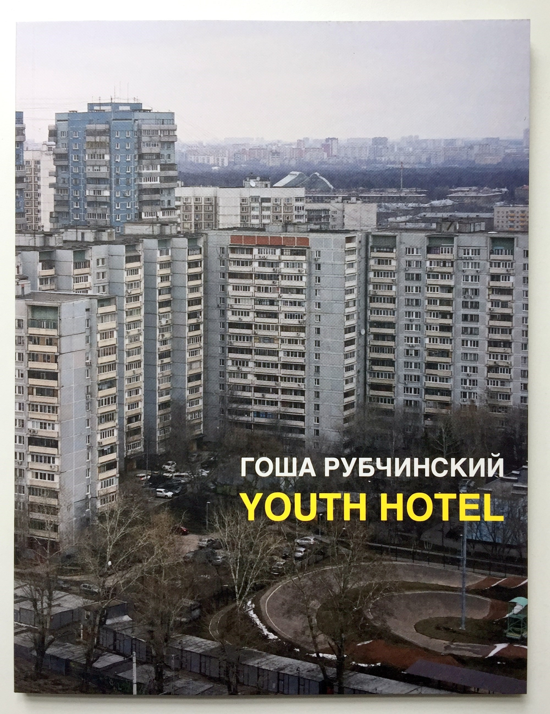

“Everything I do is about today. I am more interested in the energy of the moment. Youth has the energy and an interesting vision of the past. They can process the past into something current in a very fluid way. I always look towards youth, because it nourishes me creatively.”
“The book is called Youth Hotel. We’ve done a few shoots with my friend Lotta Volkova in Moscow, and she always stayed in Hotel Molodezhniy. It was built for the 1980 Olympics for the youth teams. The building is really cool. We used to have photo shoots and parties there. You can get a very big room for quite cheap and hang out, like 20 people in the room. So I had archived my photographs from there. I think it’s a great name, “Youth Hotel.” It’s a very romantic name, because a hotel is a place where you can stay for a bit and leave, and youth is a transient stage. So with this book I wanted to invite everyone to stay in this world of youth.”
